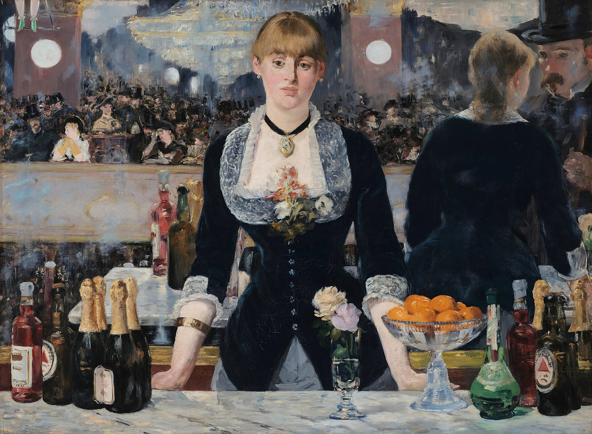

女神游乐厅的吧台 A Bar at the Folies-Bergère
女神游乐厅的吧台 / A Bar at the Folies-Bergère · 马奈 / Édouard Manet · 1882年 / 1882 · 伦敦考陶尔德美术馆（塞缪尔·考陶尔德信托） / The Courtauld, London (Samuel Courtauld Trust)
图片：公有领域（考陶尔德美术馆标注本作品为公有领域） / Image: Public domain (as marked by The Courtauld)

发现 · Discover
镜子 The mirror
她身后是一面巨大的金框镜子。背景里所有热闹的场面，其实都是镜子里的倒影。
Behind her is a large gold-framed mirror. All the bustle in the background is in fact a reflection in it.
绿色的靴子 Green boots
左上角露出一双穿绿靴子的腿，是正在表演的空中飞人。
In the top left, a pair of legs in green boots belongs to a trapeze artist mid-performance.
苏松 Suzon
吧台后面的女招待名叫苏松，是女神游乐厅真正的员工。她到马奈的画室，站在一个重建的吧台后面给他当模特。
The barmaid is Suzon, who really worked at the Folies-Bergère. She came to Manet's studio to pose behind a reconstructed bar.
对不上的倒影 A misplaced reflection
她直直地看着我们，镜子里的她却在和一位男顾客说话。马奈无视正常的透视，把两人的倒影移到了右边。
She looks straight at us, yet in the mirror she seems to be talking to a male customer. Ignoring normal perspective, Manet shifted their reflection to the right.
吧台上的酒 On the bar
台上摆着葡萄酒、香槟，还有带红色三角标志的英国巴斯啤酒。左边的酒瓶在镜子里也对不上。
On the bar are wine, champagne and British Bass beer with its red triangle logo. The bottles on the left don't match their reflections either.
楼座上的人群 The crowd
时髦的人群在楼座上走动，几笔就画了出来。
A fashionable crowd mingles on the balcony, sketched in a few quick strokes.
在画室里画的 Painted in the studio
马奈在女神游乐厅画了草图，但这幅画完全是在他的画室里完成的。
Manet made sketches at the Folies-Bergère, but painted this picture entirely in his studio.
故事 · The story
ACT I 第一幕 · 巴黎的音乐厅 A Paris music hall
女神游乐厅开业大约十年后，已经成了巴黎最受欢迎的音乐厅之一，有音乐，也有马戏表演。马奈很熟悉这里，在现场画了草图。
About a decade after opening, the Folies-Bergère had become one of the most popular music halls in Paris, with music and circus acts. Manet knew it well and made sketches there.
1882年 · 伦敦考陶尔德美术馆 / 1882 · The Courtauld, London
ACT II 第二幕 · 画室里的吧台 A bar in the studio
那时马奈已经病得很重，几乎无法行动。他在画室里重建了一个吧台，请苏松来当模特，完成了这幅画。1882年，它在巴黎沙龙展出。
By then Manet was very ill and could barely move. He rebuilt a bar in his studio, asked Suzon to pose, and finished the painting. It was shown at the Paris Salon in 1882.
1882年 · 伦敦考陶尔德美术馆 / 1882 · The Courtauld, London
ACT III 第三幕 · 最后一幅 His last major painting
这是马奈最后一幅重要作品。1883年他去世时，它还在画室里。1934年，塞缪尔·考陶尔德把它捐给了考陶尔德。今天，它挂在考陶尔德美术馆3层的LVMH大厅。
It was Manet's last major painting, still in his studio when he died in 1883. In 1934, Samuel Courtauld gave it to The Courtauld. Today it hangs in the LVMH Great Room, on Level 3 of The Courtauld Gallery.
1882年 · 伦敦考陶尔德美术馆 / 1882 · The Courtauld, London
她看着我们，镜子里的她却在看着别人。 She looks at us, but in the mirror she faces someone else.
作品档案 · Artwork record
| 画家（生卒年） · Artist (dates) | 爱德华·马奈（1832–1883） / Édouard Manet (1832–1883) |
|---|---|
| 画名 · Title | 女神游乐厅的吧台 / A Bar at the Folies-Bergère |
| 年份 · Date | 1882年 / 1882 |
| 材质 · Medium | 布面油画 / Oil on canvas |
| 尺寸 · Dimensions | 96 × 130 cm |
| 收藏地 · Collection | 伦敦考陶尔德美术馆（塞缪尔·考陶尔德信托） / The Courtauld, London (Samuel Courtauld Trust) |
| 来源说明 · Credit line | 1934年塞缪尔·考陶尔德捐赠 / Samuel Courtauld gift, 1934 |
| 博物馆作品页 · Museum page | https://gallerycollections.courtauld.ac.uk/object-p-1934-sc-234 |
关于画家 · About the artist
爱德华·马奈（1832–1883），法国画家，生于巴黎。他是描绘现代生活的先驱，对印象派画家影响很深。
Édouard Manet (1832–1883) was a French painter, born in Paris. A pioneer in painting modern life, he had a deep influence on the Impressionists.
更多马奈的画 · More by Édouard Manet